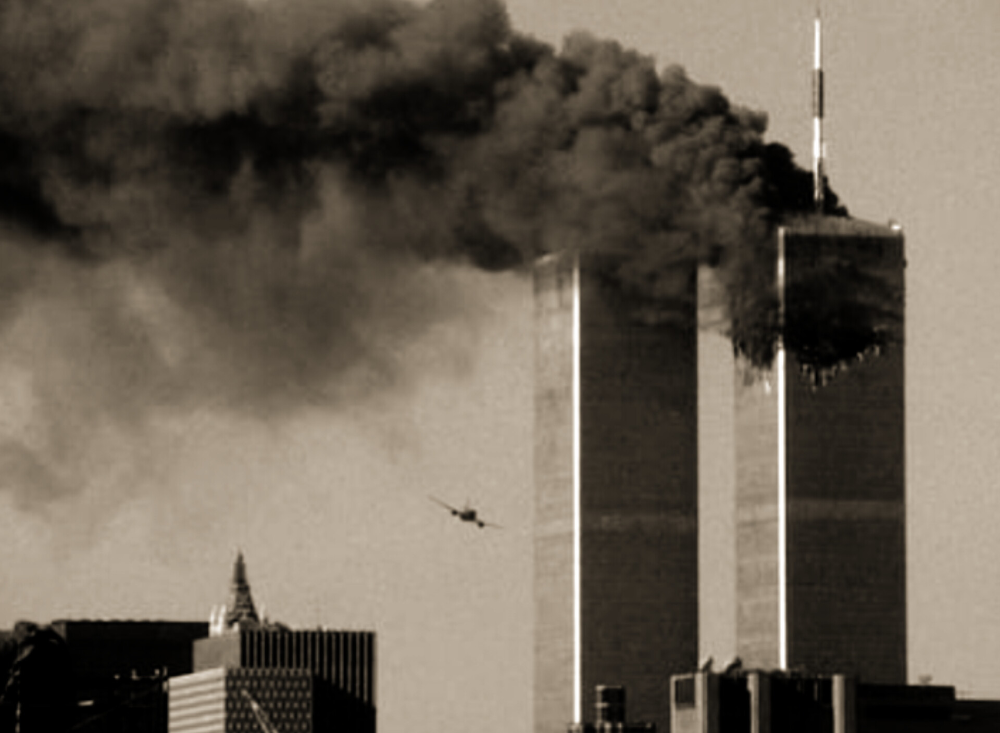

11 de Setembro de 2001: o maior atentado terrorista de todos os tempos
Ter. 11 de Setembro de 2001
Os Estados Unidos sofreram o maior atentado terrorista da história. As duas torres do World Trade Center (Nova York) e parte do Pentágono (Virgínia) foram destruídas em menos de duas horas por aviões de carreira sequestrados e jogados contra os alvos - símbolos do poder econômico e militar do país.
O número de vítimas deve chegar aos milhares. "Será maior do que poderemos suportar", disse o prefeito de Nova Yourk, Rudolph Giuliani.
O presidente americano, George W. Bush, que estava na Flórida no momento do atentado, declarou: "Não tenha dúvida: os Estados Unidos vão perseguir e punir os responsáveis por esses atos covardes".
A ação começou por volta de 9h45 (horário de Brasília), quando um avião se chocou com uma das torres de 110 andares do World Trade Center, na região de Wall Street, centro financeiro do país. Menos de 20 minutos depois, outra aeronave atingiu a segunda das torres, que formavam o quinto prédio mais alto do mundo.
Um terceiro avião atingiu o Pentágono, sede do Departamento de Defesa, perto de Washington, destruindo uma de suas salas às 10h48.
Cerca de uma hora após ser atingidas, as torres gêmeas do World Trade Center desabaram, soterrando ocupantes, bombeiros e voluntários que tentavam retirar vítimas. No final da tarde ruiu também um prédio menor, de 47 andares, que fazia parte do complexo.
Estima-se que cerca de 50 mil pessoas trabalhassem diariamente nas torres. Pelo Pentágono, circulam mais de 20 mil pessoas, entre civis e militares. Pelo menos 266 pessoas estavam nos quatro aviões sequestrados - dois da American Airlines e dois da United. Além dos três que atingiram alvos, um caiu no Estado da Pensilvânia, por causa ainda desconhecida.
O líder palestino Iasser Arafat e opositores dos americanos, como governantes do Oriente Médio, da Rússia e da China, condenaram os ataques.